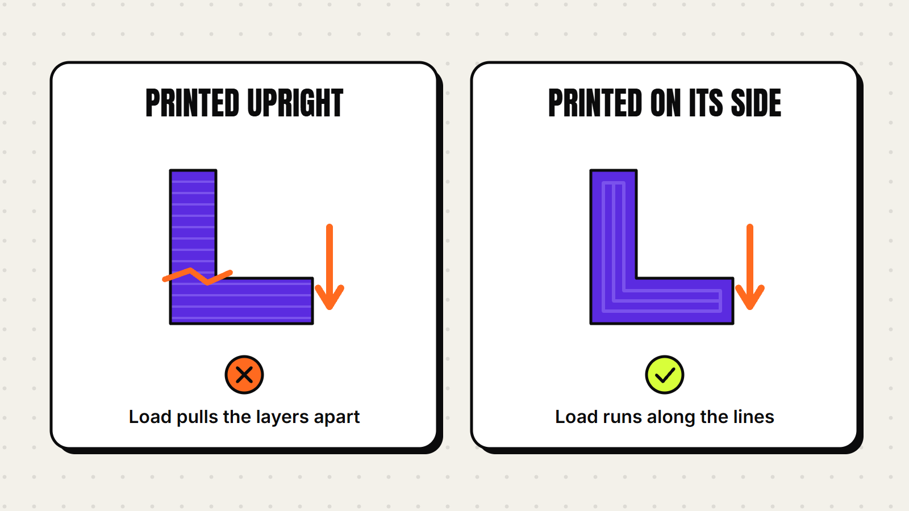
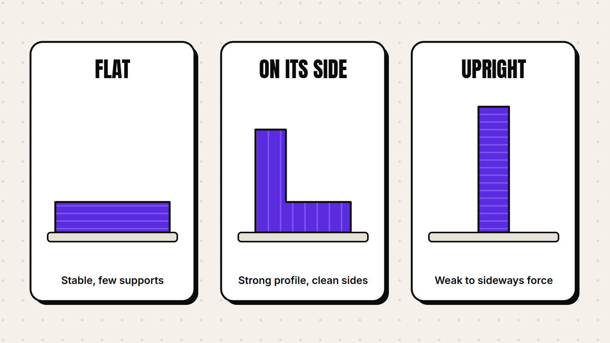

The same model can come out strong or fragile, clean or rough, depending on which way it faces on the build plate. Orientation is one of the most important decisions in 3D printing, and one that a buyer rarely sees. Knowing the basics helps you spot a good plan and explain what matters in your part.
Filament parts are made of lines laid side by side and layers stacked on top. Plastic is strongest along a continuous line and weaker where one layer meets the next. This difference is called anisotropy. It is much like wood, which splits along its grain far more readily than it breaks across it.
Imagine a wall hook. Printed standing up, with the layers stacked along the arm, a downward pull tries to peel one layer from the next, and the hook can snap. Printed lying on its side, each layer contains the whole hook shape, so the force travels along continuous lines. It is often dramatically stronger.

Orientation also decides which faces look good.
Put the surface people will see where it prints cleanest, usually as a vertical wall or on the bed.
Turning a part can remove the need for supports entirely, which saves material and avoids marks. A shape that needs a forest of supports in one position may need none when laid on a different face. Our guide to supports explains the trade-offs.
A tall, narrow part on a small base may wobble or come loose. Lying it down gives a wider footprint and fewer layers, which can also shorten the print. The trade-off may be strength or finish.

| Position | Strength | Finish | Supports |
|---|---|---|---|
| Flat on its largest face | Strong along the plate | Great underside, stepped top slopes | Often few |
| On its side | Strong along the profile | Clean side walls | Depends on shape |
| Upright | Weak against sideways force | Even walls all round | May need many |
| Tilted | Mixed | Can hide steps | Usually needed |
Holes printed vertically come out rounder than holes printed sideways, which may flatten at the top. Pins printed upright snap easily. For a strong pin, print it lying down, or use a metal rod.
Sometimes no single position gives both strength and a good surface. Splitting the part lets each piece print its best way, then be joined with pins, screws, or glue. See joints and fixings and gluing prints.
Resin parts are more even in strength in all directions, but orientation still affects supports, suction forces, and where marks appear. Detailed faces are usually angled away from supports.
Tip: Mark "this side up" and "pulls this way" on a photo or drawing. Two arrows prevent most orientation mistakes.
Each layer starts and ends somewhere, leaving a small seam line. On a square part it can hide in a corner. On a smooth cylinder it shows as a faint stripe. Choosing which side faces the wall costs nothing and can make a piece look far cleaner, so mention it when the front matters.
Orientation is a trade-off, not a rule. A good printer weighs strength, finish, supports, and stability for your particular part, and will tell you when two of them pull in different directions.
It can, but it may change supports, finish, and production time. Mention your priorities with the request so the quote reflects the right position.
No. It depends on where the force comes from. A position that resists a downward pull may be weak against a sideways knock.
They may have been printed facing different ways, which moves the seam and changes how layers catch the light. Ask for matching pieces to be printed alike.
Thicker walls, rounded corners, a metal pin, or a split design can all help when orientation alone cannot.
Sometimes the strongest position leaves support marks on the front. Decide which matters more for this object. A hidden bracket should favour strength. A display piece may favour its face, provided it carries little load. Where both matter, a split design, a thicker section, or a different shape can often give you the two together.
Include those notes with your file on the quote page. To shape parts that print well in any position, read designing for print, and to understand the inside of a part, see infill and walls.